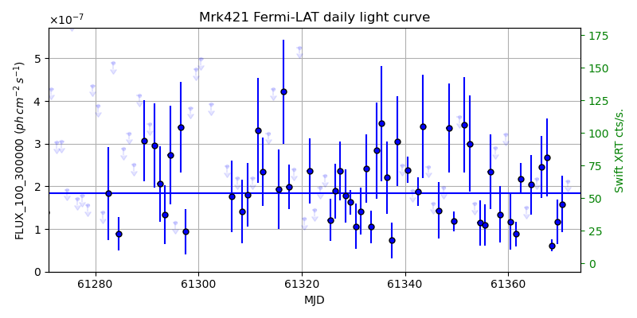
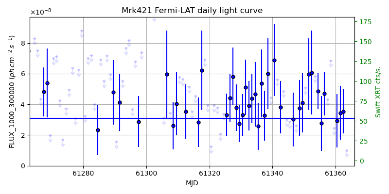

LAT Lightcurve site: https://fermi.gsfc.nasa.gov/ssc/data/access/lat/msl_lc/source/Mrk_421
Swift site: https://www.swift.psu.edu/monitoring/source.php?source=Mrk421
NED: Query
Time of last update of this page: UT: 2026-11-20 16:23 (MJD: 61364.683)
| Property | Value |
|---|---|
| R.A. | 11:04:27.36 |
| Dec. | 38:12:32.4 |
| z | 0.030 |
| 3FGL SpectrumType | PowerLaw |
| 3FGL PL Index | 1.77 |
| 3FGL Flux_100_300000 | 1.84e-07 1 / (s cm2) |
| 3FGL Flux_1000_300000 | 3.08e-08 1 / (s cm2) |
| 3FGL Flux >200 GeV | 5.07e-10 1 / (s cm2) |
| 3FGL Extrap. Crab >200 GeV | 2.15 |
| 3FGL Flux After EBL Absorption >200GeV | 4.19e-10 1 / (s cm2) |
| 3FGL EBL Crab Fraction >200GeV | 1.78 |

| MJD | dMJD | Flux | dFlux | Frac3FGL | FracCrab>200GeV | EBLFracCrab>200GeV |
|---|---|---|---|---|---|---|
| 61359.50 | 0.50 | 3.21e-07 | 0.00e+00 | 0.00 | 0.00 | 0.00 |
| 61360.50 | 0.50 | 1.18e-07 | 6.69e-08 | 0.64 | 1.40 | 1.16 |
| 61361.50 | 0.50 | 8.81e-08 | 2.95e-08 | 0.48 | 1.05 | 0.87 |
| 61362.50 | 0.50 | 2.18e-07 | 3.62e-08 | 1.19 | 2.59 | 2.14 |
| 61363.50 | 0.50 | 1.50e-07 | 0.00e+00 | 0.00 | 0.00 | 0.00 |
| MJD | dMJD | Flux | dFlux | Frac3FGL | FracCrab>200GeV | EBLFracCrab>200GeV |
|---|---|---|---|---|---|---|
| 61328.50 | 3.50 | 1.59e-07 | 2.17e-08 | 0.86 | 1.88 | 1.55 |
| 61335.50 | 3.50 | 2.01e-07 | 3.24e-08 | 1.09 | 2.38 | 1.97 |
| 61342.50 | 3.50 | 1.48e-07 | 2.74e-08 | 0.81 | 1.76 | 1.46 |
| 61349.50 | 3.50 | 1.67e-07 | 3.26e-08 | 0.91 | 1.98 | 1.64 |
| 61356.50 | 3.50 | 1.31e-07 | 1.51e-08 | 0.71 | 1.56 | 1.29 |

| MJD | dMJD | Flux | dFlux | Frac3FGL | FracCrab>200GeV | EBLFracCrab>200GeV |
|---|---|---|---|---|---|---|
| 61359.50 | 0.50 | 2.44e-08 | 0.00e+00 | 0.00 | 0.00 | 0.00 |
| 61360.50 | 0.50 | 2.92e-08 | 1.74e-08 | 0.95 | 2.07 | 1.71 |
| 61361.50 | 0.50 | 3.45e-08 | 1.74e-08 | 1.12 | 2.45 | 2.03 |
| 61362.50 | 0.50 | 3.55e-08 | 1.43e-08 | 1.15 | 2.52 | 2.08 |
| 61363.50 | 0.50 | 1.01e-08 | 0.00e+00 | 0.00 | 0.00 | 0.00 |

| MJD | dMJD | Flux | dFlux | Frac3FGL | FracCrab>200GeV | EBLFracCrab>200GeV |
|---|---|---|---|---|---|---|
| 61328.50 | 3.50 | 4.11e-08 | 5.76e-09 | 1.34 | 2.91 | 2.41 |
| 61335.50 | 3.50 | 4.27e-08 | 7.22e-09 | 1.39 | 3.03 | 2.50 |
| 61342.50 | 3.50 | 2.38e-08 | 5.22e-09 | 0.77 | 1.69 | 1.40 |
| 61349.50 | 3.50 | 2.89e-08 | 6.69e-09 | 0.94 | 2.05 | 1.69 |
| 61356.50 | 3.50 | 2.88e-08 | 6.55e-09 | 0.94 | 2.04 | 1.69 |
--------------------------------------------------------- Using user-supplied coords: 11:04:27.36 38:12:32.4 2000 --------------------------------------------------------- FLWO UT night of: 2026-11-21 Local Sid. @ Midnight: 03:37 Sunset (-15.0) (local, UT): 18:33 01:33 Sunrise (-15.0) (local, UT): 05:47 12:47 Moonrise (local, UT): Moonset (local, UT): 03:40 10:40 Moon phase: 0.85 --------------------------------------------------------- AzTime LSID UT Obj_el Obj_az Mn_el Mn_az Sep. --------------------------------------------------------- 18:33 22:09 01:33 -19.0 348.2 47.9 117.4 130.0 19:03 22:39 02:03 -20.0 354.4 53.3 125.0 129.8 19:33 23:09 02:33 -20.3 0.7 58.2 134.7 129.6 20:03 23:39 03:03 -19.8 7.0 62.3 146.9 129.4 20:33 00:09 03:33 -18.7 13.1 65.1 162.1 129.2 21:03 00:39 04:03 -16.9 19.1 66.3 179.7 129.1 21:33 01:09 04:33 -14.6 24.7 65.4 197.5 128.9 22:03 01:39 05:03 -11.6 30.0 62.9 213.2 128.7 22:33 02:09 05:33 -8.2 34.9 59.0 225.9 128.5 23:03 02:39 06:03 -2.8 39.4 54.2 235.9 128.3 23:33 03:09 06:33 0.4 43.5 48.9 243.9 128.2 00:03 03:39 07:03 4.7 47.3 43.2 250.4 128.0 00:33 04:10 07:33 9.4 50.7 37.3 255.9 127.8 01:03 04:40 08:03 14.4 53.9 31.2 260.7 127.6 01:33 05:10 08:33 19.7 56.7 25.1 265.1 127.4 02:03 05:40 09:03 25.1 59.3 19.0 269.2 127.2 02:33 06:10 09:33 30.7 61.5 12.9 273.0 127.0 03:03 06:40 10:03 36.3 63.5 6.8 276.9 126.8 03:33 07:10 10:33 42.1 65.2 1.0 280.7 126.6 04:03 07:40 11:03 48.0 66.6 -4.9 284.7 126.4 04:33 08:10 11:33 53.8 67.5 -11.1 288.8 126.2 05:03 08:40 12:03 59.8 67.7 -16.8 293.2 126.0 05:33 09:10 12:33 65.7 66.8 -22.3 298.1 125.7 05:47 09:25 12:47 68.5 65.8 -24.8 300.5 125.6 --------------------------------------------------------- Dark hours >55 deg.: 1.14 srcstart (UT): 2026-11-21 11:38 srcend (UT): 2026-11-21 12:46